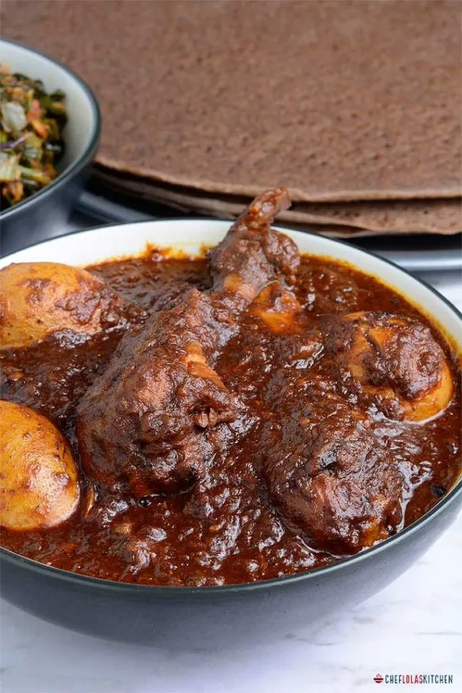

Doro Wot-Ethiopian Chicken Stew Recipe

Doro wot is an incredibly fragrant, spicy, flavorful, rich slow-cooked national dish of Ethiopia.This Ethiopian chicken stew is mostly eaten for special occasions and family gatherings.
Despite the length of time required to make Doro wat, it is a low-maintenance dish; once the onion is cooking in the oil and spice, you don't have much to do.
Ingredients
- 2 kgs red onion
- 3/4 cup berbere(Ethiopian Chili spice)
- 1 kg skinless chicken breast and legs mix
- 1 cup vegetable oil
- 1/2 cup nitir kibe(Ethiopian butter cooked with spices)
- 1 tbsp minced garlic
- 5 Hard boiled eggs
- 3 cups water
- 1 tbsp Mekelesha(Ethiopian mixed spices)
- 3 lemons/limes squeezed in water to wash and soak the chicken
Instructions
- Clean the chicken very well and soak it in lemon water. Rinse and drain when ready to use.
- peel the onions and use the food processer to dice them finely.
- Add the onions to a pot over low to medium heat. The onions will sweat and create the water they will simmer in. Continue to stir the onions to prevent burning until they change color (light pink color). About 30 to 40 minutes. When they are done, the water will evaporate, and the onions will begin to stick to the bottom of the pot.
- Add oil and cook for 15 additional minutes while stiring occasonally.
- Add berbere spice and minced garlic and half of the butter and stir well until the berbere is well cooked.
- Slash the chicken in two or three places to allow the spices and flavors to penetrate the chicken, add the chicken to the stew.
- Add the water and cook on medium heat for 30 to 40 minutes stirring occasionally to prevent burning. Continue to cook until the stew thickens up and the chicken becomes tender.
- At this point add the mixed spices,salt,rest of the butter and the peeled eggs, leave to cook for another 10 minutes.
- Serve on top of Enjera(Ethiopian flatbread) and Enjoy